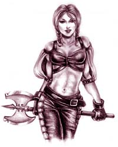
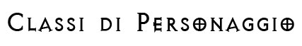
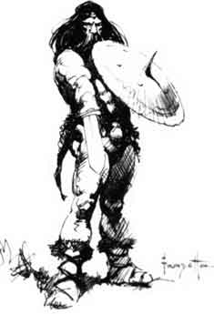
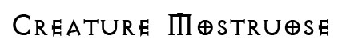
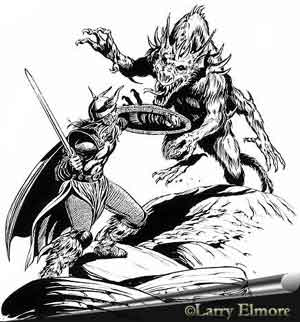
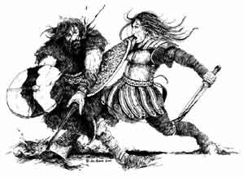
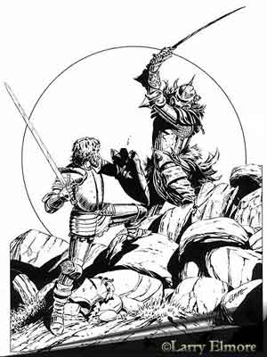
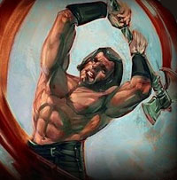

Queste
regole sono state ideate al fine di rendere l'utilizzo dei guerrieri ed in
generale delle classi di combattenti più avvincente ed emozionante senza, però,
squilibrare la dinamica del gioco. In base a queste regole, ogni personaggio (compresi i mostri dotati di una certa intelligenza) avrà a disposizione un
determinato ammontare di punti combattimento
che potrà utilizzare durante gli scontri. I punti combattimento
rappresentano l'esperienza che la creatura ha accumulato nel corso del tempo
durante gli scontri a cui ha partecipato, attraverso il loro utilizzo la
creatura sfrutterà tutti i punti deboli del suo avversario, coglierà il
momento migliore per sferrare il colpo, eviterà di farsi distrarre da altre
azioni ecc... ecc....


I
personaggi acquistano punti combattimento principalmente attraverso l'esperienza
e attraverso la bravura nell'uso delle armi. Inoltre esistono alcune competenze
che incrementano i punti combattimento. La progressione dei punti è la
seguente:
| Wizard* |
0.5 punti per
livelli di esperienza |
| Priest |
1 punto per livello
di esperienza |
| Psionic |
1 punto per livello
di esperienza |
| Rogue* |
1.5 punti per
livelli di esperienza |
| Warrior |
2 punti per livelli
di esperienza |
* Si noti che per le classi
Wizard e
Rogue si considera acquisito un punto combattimento solo quando questo è
acquistato in modo pieno. Ad esempio un mago del 3° livello potrà utilizzare
ogni giorno solo 1 punto combattimento ( anche se ne ha 1,5 ) ma una volta
passato al 4° livello potrà utilizzarne 2.
Gli appartenenti alla macroclasse
WARRIOR
nonché gli appartenenti alla
classe
THIEF, per il
loro speciale addestramento alla battaglia, acquistano punti combattimento bonus
per punteggi particolarmente elevati di intelligenza.
| Intelligenza 13 |
+ 1 punto bonus |
Intelligenza 16 |
+ 8 punti bonus |
| Intelligenza 14 |
+ 2 punti bonus |
Intelligenza 17 |
+ 16 punti bonus |
| Intelligenza 15 |
+ 4 punti bonus |
Intelligenza 18 o + |
+ 24 punti bonus |
Gli
appartenenti alla classe FIGHTER,
una
volta raggiunto l'8° livello di esperienza, ottengono
5
punti combattimento supplementari.
Raggiungendo
un determinato livello di abilità nell'uso delle armi, il personaggio acquista
anche dei punti combattimento bonus, la conoscenza di tecniche avanzate con le
armi lo aiuta infatti comunque in ogni combattimento. Il personaggio otterrà i punti bonus che gli spettano per il suo grado di specializzazione più
elevato ottenuto nelle armi ed un numero minore di punti per il grado raggiunto nelle altre armi
conosciute che non siano però armi affini o gemelle di quella principale.
Per ogni arma affine o gemella, ad una sua arma in cui sia già Gran Maestro, in
cui il personaggio diviene Gran Maestro costui ottiene un
bonus
di + 2 punti combattimento. Per ogni Arte di Combattimento conosciuta, o
suo grado completo, inoltre, il personaggio ottiene un bonus
di + 2 punti combattimento supplementari.
| Abilità Arma |
Arma Primaria |
Armi Ulteriori |
| Esperto |
+ 1 punto bonus |
Nessun punto |
| Campione |
+ 3 punti bonus |
+ 1 punto bonus |
| Maestro |
+ 6 punti bonus |
+ 3 punto bonus |
| Gran Maestro |
+ 10 punti bonus |
+ 5 punto bonus |
Come
esempio di applicazione delle precedenti regole si faccia l'esempio di Trendor
Eluin Lorgarn il mago/guerriero del 7° livello di esperienza, con 16 di
intelligenza e con la specializzazione migliore pari a Maestro nella spada
lunga. Essendo bi-classe ed applicando la regola generale dei bi-classe
utilizzerà la tavola migliore ossia quella dei guerrieri ottenendo 14 punti per
i livelli, 8 punti bonus per l'intelligenza e 6 punti bonus per la migliore
competenza nelle armi raggiunta, per un totale pari a 28 punti.


Le creature mostruose ottengono
punti combattimento solo qualora abbiano
un'intelligenza almeno pari a Low Intelligence (5).
I
mostri ottengono di base 1 punto per dado vita
pieno, oltre ad un bonus fisso per il loro punteggio di intelligenza.
| 5-7 |
Low intelligence |
+ 3 punti bonus |
| 8-10 |
Average (human)
intelligence |
+ 5 punti bonus |
| 11-12 |
Very intelligent |
+ 9 punti bonus |
| 13-14 |
Highly intelligent |
+ 15 punti bonus |
| 15-16 |
Exceptionally
intelligent |
+ 20 punti bonus |
| 17-18 |
Genius |
+ 25 punti bonus |
| 19-20 |
Supra-genius |
+ 30 punti bonus |
| 21 o + |
Godlike intelligence |
+ 40 punti bonus |
Inoltre,
qualora un mostro sia anche appartenente ad una determinata classe o abbia
abilità in un'arma, questi punti si cumuleranno con quelli di base del mostro.

I
punti di combattimento spesi saranno recuperati interamente dopo un'intera
giornata di riposo comune.
RIPOSO COMUNE - Affinché una
creatura si consideri in condizioni di riposo comune occorre che la stessa
rispetti per 24 ore le seguenti condizioni:
* Non effettui alcuna azione stancante
(ossia un'azione che preveda l'accumulo di almeno un punto fatica).
* Non soffra per il digiuno o la disidratazione.
* Non effettui il lancio di alcun incantesimo, né utilizzi alcun potere speciale
od oggetto magico per l'attivazione dei quali (nonostante non sia richiesta la
concentrazione) il personaggio deve pronunciare parole od effettuare movimenti
assimilabili ai componenti verbali e somatici degli incantesimi.
* Non utilizzi alcuna competenza non relativa alle armi.
* Dorma per almeno 8 ore consecutive nell'arco delle 24 ore.
* Non si trovi esposto a condizioni ambientali avverse (restare sotto la pioggia
o all'agghiaccio, ad esempio, non consente un adeguato riposo).
* Trascorra tale periodo in posizione relativamente comodità, senza effettuare
attività complesse che richiedono sforzo od attenzione particolare per essere
compiute. In particolare, potranno ritenersi compatibili
con una situazione di riposo regolare le seguenti attività: camminare
tranquillamente lungo un sentiero, cavalcare in pianura o lungo una strada
battuta, effettuare comodamente un turno di guardia.
Non saranno considerate, invece, compatibili con una
situazione di riposo regolare le seguenti attività: camminare senza seguire
comodamente un sentiero, cavalcare in zone impervie (foreste, colline, montagne)
e/o fuori da strade battute, effettuare una qualsiasi attività lavorativa,
effettuare una qualsiasi attività di studio o di ricerca.

I colpi di
combattimento, sia speciali che generali, possono essere suddivisi in due
categorie:
1) La prima categoria corrisponde ai colpi di combattimento che incidono su un
singolo attacco. Tali colpi di combattimento sono indicati con la dicitura
[ATTACCO]
posta immediatamente
dopo il loro nome. Questi colpi di combattimento possono essere dichiarati nel
momento del round in cui si effettua l'attacco prima che sia effettuato il
relativo tiro per colpire. I punti combattimento necessari ad effettuare tali
colpi di combattimento risulteranno spesi a prescindere dal buon esito
dell'attacco effettuato.
Ad
esempio qualora un personaggio decida di effettuare un attacco di forza
spenderà 2 punti combattimento una volta effettuato l'attacco indipendentemente
dal fatto che poi abbia colpito o meno l'avversario (anche se questo ad esempio
risulta immune al suo attacco).
2) La seconda categoria corrisponde ai colpi di
combattimento che incidono sull'intero round di combattimento o sull'iniziativa
di un attacco. Tali colpi di combattimento sono indicati con la dicitura
[ROUND]
posta immediatamente dopo il loro nome. La decisione
di utilizzare questi colpi di combattimento deve essere dichiarata nella fase
delle intenzioni. Una volta che il personaggio ha dichiarato di voler utilizzare
tali colpi di combattimento lo stesso spenderà all'inizio del round i punti di
combattimento richiesti a prescindere dal buon esito dell'azione voluta. Si
noti, inoltre, che l'utilizzo di questi punti è incompatibile con azioni diverse
dal combattimento che devono essere dichiarate (od hanno effetto) all'inizio del
round (si pensi al lancio di un incantesimo).
Coloro che
hanno a disposizione i punti combattimento potranno utilizzarli, quindi, per
effettuare
colpi di combattimento generali o speciali. Ad ogni azione di attacco è
possibile inserire uno o più colpi di combattimento, è possibile infatti
cumulare i colpi di combattimento pagando dei punti combattimento supplementari
nel rispettando
delle seguenti regole:
1)
Durante ogni singolo round è possibile utilizzare un
unico colpo speciale.
2)
Non possono essere cumulati più di due colpi generali del medesimo tipo sul
medesimo attacco.
Il
costo supplementare per il cumulo dei colpi di combattimento è il seguente:
+1
punto supplementare
per ogni colpo di combattimento diverso dal precedente che si cumula oltre al primo nel medesimo stesso attacco.
Si noti che i colpi di combattimento che incidono sull'intero round di
combattimento o sull'iniziativa di un attacco, indicati con la dicitura
[ROUND]
posta immediatamente dopo il loro nome, si cumuleranno
con qualsiasi altro colpo di combattimento effettuato nel medesimo round.
+2
punti supplementari
quando si cumulano due colpi
di combattimento generali del medesimo tipo sullo stesso attacco.
In alcuni casi particolari l'ammontare dei punti
combattimento richiesti varia a seconda dei livelli/dadi vita della vittima
designata. Può, quindi, accadere che il personaggio non sappia valutare
con precisione l'ammontare dei punti combattimento richiesti per compiere l'azione che
vuole effettuare. In questi casi qualora il personaggio decida di provare lo stesso
tale azione costui potrà rendersi conto solo successivamente di non disporre dei
punti necessari ad effettuare
il colpo. Quando ciò avviene il personaggio avrà comunque speso i punti e si saranno
applicate comunque le penalità previste dall'azione voluta ma la stessa non
risulterà possibile.

Si
noti che, nel medesimo attacco, non possono cumularsi più di due colpi generali
dello stesso tipo.
COLPO RAPIDO
[ROUND]:
Il personaggio in tale attacco ottiene un
bonus di – 1 all’iniziativa (fermo restando il minimo di +1 al tiro del
dado). Costo 1 punto combattimento.
ATTACCO DI FORZA
[ATTACCO]:
Il personaggio ottiene un bonus di +1 al danno. Tale danno
supplementare, essendo considerato un danno supplementare dovuto alla forza, non
potrà comunque permettere di superare il limite massimo di bonus al danno
utilizzabile durante l'attacco come fissato dal dado di danno base dell'arma. Questo colpo generale di
combattimento, inoltre, non può essere effettuato con armi da tiro (ad
eccezione degli archi tarati sulla forza).
Costo 2 punti combattimento.
TIRO A DISTANZA
[ATTACCO]:
Il personaggio in tale attacco ottiene un bonus di + 9 metri alle distanze di
tiro e + 3 metri alle distanze di lancio con il proiettile o l'arma in questione. Costo
2 punti combattimento.
COLPO PRECISO
[ATTACCO]:
Il personaggio in tale attacco ottiene un bonus di +
1 al tiro per colpire. Costo
3 punti combattimento.
COMBATTERE SULLA DIFENSIVA
[ROUND]:
Il personaggio ottiene nell’intero round in
cui effettua un attacco con questo colpo di combattimento un bonus di -1 alla
Classe Armatura. In pratica, il personaggio si impegna ad evitare i colpi in
arrivo. Dovendosi considerare questo beneficio come dipendente dalla destrezza
del personaggio lo stesso non sarà considerato ogni qual volta non è applicabile
il modificatore alla classe armatura dovuto al punteggio di destrezza del
personaggio come, ad esempio, nel corso del lancio degli incantesimi (a meno che
non sia utilizzata con successo la competenza Combat Casting), nel caso di attacchi
alle spalle, di attacchi di sorpresa e di altri attacchi di opportunità. Questo
colpo di combattimento è incompatibile, non potendo essere utilizzato, con la manovra di combattimento
"parata".
Costo
3 punti combattimento.
PRECISIONE NELLA MIRA
[ATTACCO]:
Può essere effettuato con
qualsiasi arma
da tiro o da lancio compresi attacchi fisici (ad esempio aculei) o per l'uso di
incantesimi che prevedano il tiro per colpire a seguito del lancio di un oggetto.
Chi
effettua questo attacco non avrà la possibilità di colpire, sbagliando il
bersaglio che si trova in un melee con altre creature, di colpire una creatura
diversa da quella che sta mirando (questo colpo non da però alcun bonus al tiro
per colpire che comunque deve essere superato con successo).
Costo
3 punti combattimento.

Ogni personaggio può utilizzare un solo colpo speciale in ogni round di
combattimento.
Si ricordi, inoltre, che qualora l'avversario risulti colpito
unicamente perché l'attaccante a tirato un 20
naturale, sebbene fosse stato richiesto anche a causa delle penalità un tiro
superiore, i seguenti colpi di combattimento speciali
(ad eccezione del fendente frontale, dell'attacco extra, della deflessione
superiore e dell'evasione
migliorata)
non sortiranno alcun effetto.
Lo stesso risultato si verifica qualora, nonostante il bersaglio designato sia
stato colpito, l'attacco effettuato non abbia provocato alcun danno (ad esempio
per l'applicazioni di riduzioni o di penalità ai danni).
PROVOCAZIONE
[ROUND]:
Può essere effettuato
solo dai personaggi che
si trovino all'inizio del round già in corpo a corpo con la vittima designata.
Con questo colpo di combattimento speciale il personaggio utilizza la propria
esperienza in battaglia per provocare un singolo avversario. Questo colpo di
combattimento può essere utilizzato solo su avversari
che abbiano fino a due dadi vita/livelli superiori rispetto al livello di chi
prova ad effettuarlo. Quando
questo colpo di combattimento viene utilizzato l'avversario designato deve
superare, immediatamente all'inizio del round, un tiro salvezza su mente con un
bonus base di +5% e con l'applicazione dei bonus e dei malus applicabili ai
tiri salvezza contro effetti ed incantesimi mentali (senza applicare alcun
modificatore per la differenza di livello). Se il tiro salvezza riesce,
l'avversario non subirà alcun effetto. In caso di successo critico, la vittima
non solo non subirà effetti ma risulterà immune ad ogni altro tentativo di
provocazione effettuato dal medesimo personaggio nell'arco di 24 ore.
Se il tiro salvezza fallisce, per l'intero round,
l'avversario potrà effettuare attacchi fisici in corpo a corpo solo su chi ha
effettuato la provocazione. Costui, però, sarà comunque libero di effettuare
qualsiasi altra azione diversa da un attacco fisico in corpo a corpo (come
spostarsi, attaccare a distanza, lanciare incantesimi, utilizzare poteri ed
attacchi speciali, ecc... ecc...)
nei confronti di qualsiasi altra creatura.
In caso di fallimento critico, la vittima perderà ogni
azione nel round. Le creature immuni agli effetti mentali (come i costruiti, i
non morti e le creature non intelligenti) sono immuni agli effetti di questo
colpo di combattimento speciale.
Costo
5 punti combattimento.
PROIETTILE FATALE
[ATTACCO]:
Può essere effettuato con
qualsiasi arma
da tiro.
Chi effettua questo attacco ottiene una penalità di - 2 al
tiro per colpire.
Qualora il proiettile colpisca l'avversario oltre ad effettuare i normali danni
si tirerà direttamente un effetto critico alla vittima dalla tavola utilizzata
per i critici subiti dai mostri. Se nel tiro il personaggio effettua un critico
naturale si tirerà un altro critico che sia compatibile con quello precedente.
Questo colpo non può essere effettuato contro creature di size gargantuan
mentre può essere utilizzato contro
creature di size
huge
solo con la balestra pesante ed il bastone a fionda caricato
con un macigno.
Costo
5 punti combattimento.
ATTACCO DELLA VIOLENZA
[ATTACCO]:
Può essere effettuato con
qualsiasi arma
da corpo a corpo utilizzata a due mani.
Chi effettua questo attacco
otterrà un bonus di +4 ai danni. Tali danni supplementari, essendo considerati
danni supplementari dovuti alla forza, non potranno comunque permettere di
superare il limite massimo di bonus al danno utilizzabile durante l'attacco come
fissato dal dado di danno base dell'arma. Questo colpo speciale di combattimento
non può essere cumulato con il colpo di combattimento generale
Attacco di Forza.
Costo
8 punti combattimento.
CAUSARE GRANDE DOLORE
[ATTACCO]:
Può essere effettuato con
qualsiasi
arma da corpo a corpo e con tutti gli attacchi fisici.
Chi effettua questo attacco ottiene una
penalità di -
2 al
tiro per colpire,
ma se l'attacco ha successo la
vittima colpita oltre a subire le normali ferite sentirà un dolore acutissimo.
Infatti, se i danni provocati con tale attacco sono pari ad almeno il 10% dei
punti ferita massimi (arrotondati per difetto) posseduti dalla vittima,
costei dovrà superare un tiro salvezza su robustezza
(se la vittima possiede
la competenza
Pain Tollerance e supera la relativa prova riceve un bonus
di +15% a questo tiro salvezza) o perdere tutti
gli attacchi successivi del round in cui è stata colpita. Se i danni provocati
con tale attacco sono inferiori al 10% dei punti ferita massimi (arrotondati
per difetto) posseduti dalla vittima, costei dovrà superare un tiro salvezza su
robustezza (se la vittima possiede
la competenza Pain Tollerance e supera la relativa prova riceve un bonus
di +15% a questo tiro salvezza) o
subire una penalità di -2 al tiro per colpire a tutti
gli attacchi successivi del round in cui è stata colpita. Questo attacco non può essere usato
su creature che sono immuni al dolore e/o che non hanno organi vitali
(non morti, costruiti ecc...) oppure su creature i cui organi vitali non sono riconoscibili (slimes, cubo gelatinoso,
vermi, ecc...).
Questo colpo non può essere effettuato contro creature di size gargantuan
mentre può essere utilizzato contro
creature di size
huge
solo utilizzando armi da corpo a corpo di dimensioni large. In ogni caso, le
creature di size
huge otterranno un ulteriore bonus di +10% al realtivo tiro salvezza.
Costo
3 punti combattimento.
RALLENTAMENTO
[ATTACCO]:
Questo attacco può essere utilizzato
solo con le armi da botta da corpo a corpo
(e scudo) e con attacchi fisici assimilabili (colpi di coda, pugni ecc...). Chi
effettua questo attacco ottiene una
penalità di - 1 al tiro per colpire e di
- 1 ai danni,
ma se l'attacco ha successo la vittima colpita oltre a subire le normali ferite
subirà una botta tale che potrebbe rallentarla nel round successivo. Dovrà a
questo punto superare un tiro salvezza su robustezza
o subire una penalità di +5 all'iniziativa nei successivi 1d4 rounds a
partire da quello in
cui è stata colpita. Questo colpo non può essere utilizzato su creature che
non hanno organi vitali (non morti, costruiti ecc...)
oppure su creature i
cui organi vitali non sono riconoscibili (slimes, cubo gelatinoso, vermi,
ecc...).
Questo colpo non può essere effettuato contro creature di size gargantuan
mentre può essere utilizzato contro
creature di size
huge
solo utilizzando armi da corpo a corpo di dimensioni large. In ogni caso, le
creature di size
huge otterranno un ulteriore bonus di +10% al
relativo tiro salvezza. Costo
3 punti combattimento.
INCAPACITARE
[ATTACCO]:
Questo attacco può essere utilizzato
solo con le armi da botta da corpo a corpo
(e lo scudo) e con attacchi fisici assimilabili (colpi di coda, cariche ecc...). Chi
effettua questo attacco ottiene una penalità di - 2 al tiro per colpire e di
- 1 ai danni, ma se l'attacco ha successo la vittima colpita oltre a
subire le normali ferite potrà restare incapacitata per alcuni minuti. Dovrà a questo punto superare un tiro salvezza
su robustezza
o restare incapacitata (vedere le regole alla pagina successiva) per 1d3+1 rounds (comprensivi
di quello dell'attacco). Questo colpo non può essere utilizzato su creature
che non hanno organi vitali (non morti, costruiti ecc...)
oppure su creature i
cui organi vitali non sono riconoscibili (slimes, cubo gelatinoso, vermi,
ecc...).
Questo colpo non può essere effettuato contro creature di size gargantuan
mentre può essere utilizzato contro
creature di size
huge
solo utilizzando armi da corpo a corpo di dimensioni large. In ogni caso, le
creature di size
huge otterranno un ulteriore bonus di +10% al relativo tiro salvezza. Costo
5 punti combattimento.
TAGLIO PROFONDO
[ATTACCO]:
Questo attacco può essere utilizzato
solo con le armi da
taglio da corpo a corpo e con attacchi fisici assimilabili (artigliate, morsi ecc...). Chi effettua questo attacco ottiene
una penalità di - 2 al tiro per colpire, ma
se l'attacco ha successo la vittima colpita oltre a subire le normali ferite
subirà una taglio tale che potrebbe subire un'emorragia. Dovrà a questo punto
superare un tiro salvezza su robustezza o perdere 2 punti ferita alla fine di
ogni round a partire da quello in cui è stato ferito. L'emorragia durerà un
round livello/dado vita dell'attaccante. L'emorragia potrà essere fermata prima
del suo naturale scadere
solo da chi possiede la competenza healing ed abbia a disposizione
due bendaggi con una prova
nell'abilità oppure con una magia di cure light wounds
(od
attraverso qualsiasi altra cura magica che sia in grado di far recuperare in un
singolo round 5 o più punti ferita) che sia indirizzata unicamente a fermare
l'emorragia. Più attacchi di questo tipo non cumuleranno gli effetti ma la
perdita di sangue procederà per la durata dell'effetto più lungo. Questo
attacco non può essere usato su creature che non hanno organi vitali (non
morti, costruiti ecc...),
su creature i cui
organi vitali non sono riconoscibili (slimes, cubo gelatinoso, vermi, ecc...) o
su creature che hanno una rigenerazione in grado di rigenerare almeno un punto
ferita al round.
Questo colpo non può essere effettuato contro creature di size gargantuan
mentre può essere utilizzato contro
creature di size
huge
solo utilizzando armi da corpo a corpo di dimensioni large. In ogni caso, le
creature di size
huge otterranno un ulteriore bonus di +10% al
relativo tiro salvezza. Costo
5 punti combattimento.
IMPALAMENTO
[ATTACCO]:
Questo attacco può essere utilizzato
solo con le armi da
punta, da corpo a corpo, di dimensioni minime
large. Chi effettua questo attacco
ottiene una penalità di - 2 al
tiro per colpire, ma se l'attacco ha successo la vittima colpita
oltre a subire le normali vedrà l'arma dell'attaccante penetrare nel proprio
corpo. La vittima, infatti, dovrà superare un tiro salvezza su robustezza o restare con l'arma conficcata nel proprio corpo. Una creatura con una tale
arma in corpo subirà una penalità di - 2 ai tiri per colpire e di + 2
all'iniziativa e avrà il 25 % di possibilità di fallire nel lancio
delle magie e non vedrà applicarsi il bonus di destrezza alla sua classe
armature. Ulteriori armi conficcate cumuleranno le penalità fino ad un massimo
di tre armi conficcate (le successive non daranno altre penalità ma dovranno
comunque essere rimosse per liberare il soggetto dalle penalità precedenti). Al
suo successivo attacco l'attaccante potrà scegliere se lasciare l'arma nel corpo
della vittima o estrarla. Se la estrae provocherà automaticamente (senza tiro
per colpire) i danni dei dadi dell'arma senza alcun altro bonus (impiegando in
questo modo un attacco); se invece deciderà di lasciarla la vittima continuerà a
subire le penalità fino a che l'arma non sarà estratta. La vittima potrà
estrarla rapidamente (conta una azione complessa) provocandosi le ferite dei
dadi dell'arma, oppure potrà essere rimossa con una prova nella competenza
healing
effettuata con successo (azione
che richiede 1d3+2 rounds ed una tranquillità che non è possibile ottenere in situazione di combattimento) e solo se
la prova ha successo non vi saranno ulteriori danni. Una volta lasciata nel corpo
della vittima, se
una creatura vuole, con la medesima azione, riprendere l'arma in combattimento ed estrarla senza il
volere della vittima, dovrà effettuare un attacco in corpo a corpo con il
proprio attacco fisico (senza utilizzare quindi alcuna arma) e colpire la vittima. Questo attacco
non può essere usato su creature che non hanno organi vitali (non
morti, costruiti ecc...)
oppure su creature i
cui organi vitali non sono riconoscibili (slimes, cubo gelatinoso, vermi,
ecc...).
Questo colpo non può essere effettuato contro creature di size gargantuan
mentre può essere utilizzato contro
creature di size
huge
solo utilizzando armi da corpo a corpo di dimensioni large. In ogni caso, le
creature di size
huge otterranno un ulteriore bonus di +10% al
relativo tiro salvezza.
Costo
6 punti combattimento.
ATTACCO LETALE
[ATTACCO]:
Può essere effettuato
con qualsiasi
arma e con tutti gli attacchi fisici. Chi effettua questo
attacco ottiene
una penalità di - 2 al
tiro per colpire, ma se l'attacco ha successo la vittima
sarà colpita in un punto vitale e subirà il doppio dei dadi di danno.
L'attaccante potrà tirare due volte i dadi di danno ma sommerà solo una volta
i bonus alle ferite, si ricorda che alcune armi (come la spada bastarda) hanno
un bonus insito nel dado, questo bonus (e solo questo) si sommerà a ogni tiro
di dado. Non è possibile cumulare questo attacco con l'attacco alle spalle dei
ladri. Questo attacco non può essere usato su creature che non hanno organi
vitali (non morti, costruiti ecc...)
oppure su creature i
cui organi vitali non sono riconoscibili (slimes, cubo gelatinoso, vermi,
ecc...). Al solo fine del costo in punti combattimento di questo colpo speciale
l'archibugio ed il bastone a fionda caricato con il macigno saranno considerate
armi di dimensioni
large e la
pistola a pietra focaia un'arma di dimensioni
medium (le
armi da fuoco non raddoppieranno il dado supplementare dovuto alla regola della
penetrazione profonda). Quando questo colpo di combattimento è utilizzato da una
creatura mostruosa per la quale non è possibile distinguere tra dado di danno e
bonus alle ferite, il danno provocato dall'attacco del mostro sarà aumentato
direttamente del 50% applicando un arrotondamento per eccesso.
Questo colpo non può essere effettuato contro creature di size gargantuan
mentre può essere utilizzato contro
creature di size
huge
solo utilizzando armi da corpo a corpo di dimensioni large.
Costo
4 (armi o attacchi small), 5 (armi o attacchi medium), 6 (armi o
attacchi large), 8 (attacchi fisici di creature huge), 10
(attacchi fisici di creature gargantuan).
FENDENTE FRONTALE
[ATTACCO]:
Può essere effettuato
con qualsiasi arma da corpo a
corpo o attacco
fisico (ad eccezione dei morsi) che sia almeno di dimensione
medium. Chi effettua questo attacco ottiene una
penalità di - 2 al
tiro per
colpire e di -1 ai danni, se però l'attacco ha successo il
combattente colpirà una seconda creatura che si trovi con lui in melee nella
posizione frontale.
Il combattente potrà attaccare con un solo attacco due creature che si trovino
però entrambe in combattimento con lui nella posizione frontale ed adiacenti
l'una all'altra. Il combattente effettuerà un unico tiro per colpire (che
confronterà con le due classi armature delle creature per vedere se ne ha
colpita una sola, nessuna o entrambe) ed effettuerà un unico tiro per le
ferite. Costo
6 punti combattimento.
DECAPITAZIONE
[ATTACCO]:
Può essere effettuato
solo
con spade ed asce di dimensioni
large
impugnate a
due mani e war scythe
(si faccia eccezione per le
creature che sono in grado di utilizzare con una sola mano le armi a due mani le
quali potranno utilizzare questo colpo speciale anche impugnando l'arma con una
sola mano, qualora queste creature utilizzino l'arma con due mani imporranno una
penalità di -5% al tiro salvezza della vittima).
Chi effettua questo attacco ottiene
una
penalità di - 4 al tiro per colpire, ma se
l'attacco ha successo la vittima colpita oltre a subire le normali ferite
rischierà di essere decapitata, dovrà infatti superare un tiro salvezza su
robustezza od essere decapitata e morire istantaneamente. Questo può essere utilizzato
solo sulle creature umanoidi di taglia massima
Large ad
eccezione dei costruiti, dei non morti e di quelle
creature la cui testa (sebbene presente) non sia il centro dell'attività
celebrare.
Questo colpo non può essere effettuato contro creature di size gargantuan
o
huge.
Costo
12 punti combattimento.
ATTACCO EXTRA
[ROUND]:
Può essere effettuato
con qualsiasi arma e con tutti
gli attacchi fisici ad eccezione delle armi da
fuoco. A
differenza degli altri colpi speciali questo colpo non si applica ad un attacco
già avuto ma dona un nuovo attacco nel round, chi effettua questo attacco ottiene
una
penalità di - 1 al tiro per colpire con tutti i suoi attacchi nel round.
L'attacco extra sarà valutato ai fini dell'iniziativa come un attacco multiplo
non simultaneo.
Costo
12 punti combattimento (10 se si possiede la competenza quickness).
|
 |
ATTACCO BRUTALE
[ATTACCO]:
Può essere effettuato solo
con le seguenti armi, impugnate rigorosamente a due mani:
Claymore, Two
Handed Sword, Great Scimitar, No Dachi, Two Handed Battle Axe, Great
Mace, War Star, Two Handed War Hammer
(si
tenga presente che le
creature che sono in grado di utilizzare con una sola mano le armi a due mani
non potranno comunque utilizzare questo colpo senza impugnare l'arma con
entrambe le mani).
Questo colpo speciale di combattimento
può essere utilizzato solo all'esito di una
manovra di carica effettuata con successo (link).
Chi effettua questo attacco
non
riceverà in alcun caso i benefici previsti dalla manovra di carica, ma se
l'attacco ha successo chi lo ha effettuato tirerà due volte i dadi di danno ed
applicherà unicamente il risultato più elevato (si noti che questo
beneficio si applica solo al dado base dell'arma non ad altri dadi
eventualmente applicabili, si pensi, ad esempio, agli effetti magici od
ai benefici di alcune arti di combattimento).
Costo 4 punti combattimento. |
DEFLESSIONE SUPERIORE
[ATTACCO]:
Può essere effettuato
solo dai personaggi che
posseggono l'Arte di Combattimento del Deflettere i Colpi. Il
personaggio riceverà un bonus di +4 al tiro per verificare se è riuscito a
deflettere l'attacco.
Costo
5 punti combattimento.
EVASIONE MIGLIORATA
[ATTACCO]:
Può essere effettuato
solo dai personaggi che
posseggono l'Arte di Combattimento della Schivata. La percentuale di
schivata nei confronti dell'attacco è incrementata del +20%. Costo
5 punti combattimento.
Oltre
a questa tipologia generica di colpi, durante un combattimento un personaggio
potrà utilizzare tecniche di
combattimento specifiche che variano a seconda dell’arma utilizzata oppure
particolari manovre
speciali di combattimento per
queste a differenza dei suddetti colpi di combattimento non è necessario
utilizzare alcun punto combattimento.